화학분석기사(구) (2018-03-04 기출문제)
1과목: 일반화학
1. 다음과 같은 반응에서 압력을 증가시키면 어떻게 되는가?
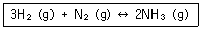
- 평형이 왼쪽으로 이동
- 평형이 오른쪽으로 이동
- 평형이 이동하지 않음
- 평형이 양쪽으로 이동
(정답률: 81%)

2. 1.00g 의 아세틸렌이 완전히 연소할 때 생성되는 이산화탄소의 부피는 표준상태에서 몇 L 인가? (단, 모든 기체는 이상기체라고 가정한다)(오류 신고가 접수된 문제입니다. 반드시 정답과 해설을 확인하시기 바랍니다.)(오류 신고가 접수된 문제입니다. 반드시 정답과 해설을 확인하시기 바랍니다.)
- 1.225L
- 1.725L
- 2.225L
- 2.725L
(정답률: 71%)
3. 화학식과 그 명칭을 잘못 연결한 것은?
- C3H8 - 프로판
- C4H10 - 펜탄
- C6H14 - 헥산
- C8H18 - 옥탄
(정답률: 84%)
4. 질산(HNO3) 23g 이 물 200g 에 녹아 있다. 이 질산 용액의 몰랄 농도는 약 얼마인가?
- 1.243 m
- 1.825 m
- 2.364 m
- 2.992 m
(정답률: 78%)
5. 다음 반응에 대한 평형상수 Kc를 옳게 나타낸 것은?(오류 신고가 접수된 문제입니다. 반드시 정답과 해설을 확인하시기 바랍니다.)
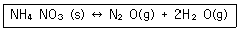
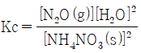
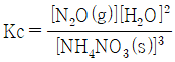
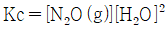
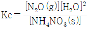
(정답률: 71%)
6. 원자에 대한 설명 중 틀린 것은?
- 수소원자(H)는 1개의 중성자와 1개의 양성자 그리고 1개의 전자로 이루어져 있다.
- 수소원자에서 전자가 빠져나가면 수소이온(H+)이 된다.
- 수소원자에서 전자가 빠져나간 것이 양성자이다.
- 탄소의 경우처럼 수소 역시 동위원소들이 존재한다.
(정답률: 77%)
7. NaBr 과 Cl2 가 반응하여 NaCl 과 Br2를 형성하는 반응의 두 반쪽반응은?
- (산화) : Cl2 + 2e- → 2Cl-
(환원) : 2Br- → Br2 + 2e- - (산화) : 2Br- → Br2 + 2e-
(환원) : Cl2 + 2e- → 2Cl- - (산화) : Br- → Br2 + 2e-
(환원) : Cl2 + e- → Cl- - (산화) : Br + 2e- → Br2-
(환원) : 2Cl- → Cl2 + 2e-
(정답률: 73%)
8. 40.9% C, 4.6% H, 54.5% O 의 질량백분율 조성을 가지는 화합물의 실험식에 가장 가까운 것은?
- CH2O
- C3H4O3
- C6H5O6
- C4H6O3
(정답률: 80%)
9. 다음 중 물에 대한 용해도가 가장 낮은 물질은?
- CH3CHO
- CH3COCH3
- CH3OH
- CH3Cl
(정답률: 52%)
10. CH3COOCH2CH3 를 특성기에 따라 분류하면 다음 중 무엇에 해당하는가?
- 카복시산류
- 에스테르류
- 알데하이드류
- 에테르류
(정답률: 70%)
11. 이소프로필알코올(isopropyl alcohol)을 옳게 나타낸 것은?
- CH3-CH2-OH
- CH3-CH(OH)-CH3
- CH3-CH(OH)-CH2-CH3
- CH3-CH2-CH2-OH
(정답률: 79%)
12. 다음 중 산-염기 반응의 쌍이 아닌 것은?
- C2H5OH + HCOOH
- CH3COOH +NaOH
- CO2 + NaOH
- H2CO3 + Ca(OH)2
(정답률: 57%)
13. 25℃에서 에틸알코올(C2H5OH) 30g을 물 100.0g 에 녹여 만든 용액의 증기압(mmHg)은 얼마인가? (단 25℃에서 순수한 물의 증기압은 23.88mmHg이고 순수한 에틸알코올에 대한 증기압은 61.2 mmHg 이다.)
- 24.5 mmHg
- 27.7 mmHg
- 36.8 mmHg
- 52.3 mmHg
(정답률: 43%)
14. 주기율표에 대한 일반적인 설명 중 가장 거리가 먼 것은?
- 주기율표는 원자번호가 증가하는 순서로 원소를 배치한 것이다.
- 세로열에 있는 원소들이 유사한 성질을 가진다
- 1A족 원소를 알칼리금속이라고 한다.
- 2A족 원소를 전이금속이라고 한다.
(정답률: 85%)
15. 질량백분율이 37% 인 염산의 몰농도는 약 얼마인가? (단, 염산의 밀도는 1.188g/mL이다.)(오류 신고가 접수된 문제입니다. 반드시 정답과 해설을 확인하시기 바랍니다.)
- 0.121M
- 0.161M
- 12.1M
- 16.1M
(정답률: 68%)
16. 다음의 반응에서 산화되는 물질은 무엇인가?
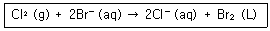
- Br-
- Cl2
- Br2
- Cl2, Br2
(정답률: 78%)
17. 이온에 대한 설명 중 틀린 것은?
- 전기적으로 중성인 원자가 전자를 얻거나 잃어버리면 이온이 만들어진다.
- 원자가 전자를 잃어 버리면 양이온을 형성한다.
- 원자가 전자를 받아들이면 음이온을 형성한다.
- 이온이 만들어질 EO 핵의 양성자 수가 변해야 한다.
(정답률: 85%)
18. 다음 원자나 이온 중 짝짓지 않은 3개의 홀전자를 가지는 것은?
- N
- O
- Al
- S2-
(정답률: 78%)
19. 유기화합물의 작용기 구조를 나타낸 것 중 틀린 것은?
- 케톤 :
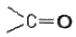
- 아민 :
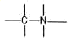
- 알데히드 :
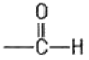
- 에스테르 :
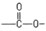
(정답률: 72%)
20. 물질의 구성에 관한 설명 중 틀린 것은?
- 몰(mole) 질량의 단위는 g/mol 이다.
- 아보가드로 수는 수소 12.0g 속의 수소원자의 수에 해당한다.
- 몰(mole)은 아보가드로 수만큼의 입자들로 구성된 물질의 양을 의미한다.
- 분자식은 분자를 구성하는 원자의 종류와 수를 원소 기호를 사용하여 나타낸 화학식이다.
(정답률: 83%)
2과목: 분석화학
21. 킬레이트적정법에서 사용하는 금속지시약이 가져야 할 조건이 아닌 것은?
- 금속지시약은 금속이온과 반응하여 킬레이트화합물을 형성할 수 있어야 한다.
- 금속지시약이 금속이온과 반응하여 안정도상수는 킬레이트 표준용액이 금속지시약과 반응하여 형성하는 킬레이트화합물의 안정도상수보다 작아야 한다.
- 적정에 사용하는 금속지시약의 농도는 가능한 진하게 해야 하고, 금속이온의 농도는 작게 해야 한다.
- 금속지시약과 금속이온이 만드는 킬레이트화합물은 분명하게 특이한 색깔을 띠어야 한다.
(정답률: 68%)
22. 20.00mL 의 0.1000M Hg22+를 Cl-로 적정하고자 한다. 반응을 완결시키는데 필요한 0.1000M Cl-의 부피(mL)는 얼마인가? (단, Hg2Cl2(s) ↔ Hg22+(aq) + 2Cl-(aq), Ksp = 1.2× 10-18이다.)
- 10mL
- 20mL
- 30mL
- 40mL
(정답률: 56%)
23. 다음 중 부피분석에 해당하지 않는 것은?
- 젤 투과에 의한 단백질 분석
- EDTA를 사용하는 납 이온 분석
- 요오드에 의한 아스코브산의 정량
- 과망간산칼륨에 의한 옥살산의 정량
(정답률: 69%)
24. HBr(분자량 80.9g/mol)의 질량 백분율이 46%인 수용액의 밀도는 1.46g/mL이다. 이 용액의 몰 농도(mol/L)는 얼마인가?
- 3.89mol/L
- 5.69mol/L
- 8.30mol/L
- 39.2mol/L
(정답률: 70%)
25. 용해도곱(solubility product)은 고체염이 용액내에서 녹아 성분 이온으로 나뉘는 반응에 대한 평형 상수로 Ksp로 표시한다. PbI2는 다음과 같은 용해 반응을 나타내고, 이 때, Ksp는 7.9 x 10-9이다. 0.030M NaI를 포함한 수용액에 PbI2를 포화상태로 녹일 때, Pb2+의 농도는 몇 M 인가? (단, 다른 화학반응은 없다고 가정한다.)
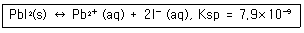
- 7.9 x 10-9
- 2.6 x 10-7
- 8.8 x 10-6
- 2.0 x 10-3
(정답률: 41%)
26. 25℃ 0.10M KCl 용액의 계산된 pH 값에 가장 근접한 값은? (단, 이용액에서의 H+와 OH- 의 활동도 계수는 각각 0.83과 0.76이다.)
- 6.98
- 7.28
- 7.58
- 7.88
(정답률: 54%)
27. 0.3M La(NO3)3 용액의 이온세기를 구하면 몇 M 인가?
- 1.8
- 2.6
- 3.6
- 6.3
(정답률: 69%)
28. 유해물질인 벤젠(분자량=78.1)이 하천에 무단 방출되어 이를 측정한 결과 15ppb가 존재하는 것으로 보고되었다. 이 농도를 몰농도로 바꾸면 약 얼마인가?
- 1.9 x 10-6M
- 1.9 x 10-7M
- 1.9 x 10-10M
- 1.9 x 10-13M
(정답률: 42%)
29. 표준 수소전극의 표준환원전위 E∘ = 0.0V, 은-염화은 전극의 표준환워전위 E∘ = 0.197V, 포화 칼로멜전극의 표준환원전위 E∘ = 0.241V 이다. 어떤 분석용액을 기준 전극으로 은-염화은 전극을 사용하여 전압을 측정하였더니 0.284V 이었다. 기준전극을 포화칼로멜전극으로 바꿔 사용하였을 때 측정되는 전압은 몇 V 인가?
- 0.240V
- 0.241V
- 0.284V
- 0.288V
(정답률: 58%)
30. 금이 왕수에서 녹을 때 미량의 금이 산화제인 질산에 의해 이온이 되어 녹으면 염소 이온과 반응해서 제거되면서 계속 녹는다. 이때 금 이온과 염소 이온 사이의 반응은?
- 산화-환원
- 침전
- 산-염기
- 착물형성
(정답률: 63%)
31. 부피분석의 한 가지 방법으로 용액 중의 어떤 물질에 대하여 표준용액을 과잉으로 가하여, 분석물질과의 반응이 완결된 다음 미반응의 표준용액을 다른 표준용액으로 적정하는 방법은?
- 정적정법
- 후적정법
- 직접적정법
- 역적정법
(정답률: 84%)
32. 다음 반응에서 염기-짝산과 산-짝염기 쌍을 각각 옳게 나타낸 것은?
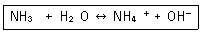
- NH3 - OH-, H2O - NH4+
- NH3 - NH4+, H2O - OH-
- H2O - NH3, NH4+ - OH-
- H2O - NH4+, NH3 - OH-
(정답률: 80%)
33. 활동도 및 활동도계수에 대한 설명으로 옳은 것은?
- 활동도는 농도나 온도에 관계없이 일정하다.
- 이온세기가 매우 작은 묽은 용액에서 활동도계수는 1 에 가까운 값을 갖는다.
- 활동도는 활동도계수를 농도의 제곱으로 나눈 값이다.
- 이온의 활동도계수는 전하량과 이온세기에 비례한다.
(정답률: 70%)
34. 염산의 표준화를 위하여 사용하는 탄산나트륨을 완전히 건조하지 않았다면 표준화된 염산의 농도는 완전히 건조한 (무수)탄산나트륨을 사용하여 표준화했을 EO의 염산 농도에 비해 어떻게 되는가?
- 높게 된다.
- 낮게 된다.
- 같은 농도를 갖는다.
- 탄산나트륨에 있는 물의 양과 무관하다.
(정답률: 70%)
35. Ba(OH)2 용액 200mL을 중화하기 위하여 0.2M HCl 용액 100mL 이 필요하였다. Ba(OH)2 용액의 노르말 농도(N)는?
- 0.01
- 0.⑤
- 0.1
- 0.5
(정답률: 62%)
36. 산화환원 적정 시 MnO4- 와 Mn2+ 또는 Fe2+와 Fe3+ 가 용액 중에 함께 존재하는 경우와 같이 때로는 분석물질을 적정하기 전에 산화상태를 조절할 필요가 있다. 산화상태를 조절하는 방법이 아닌 것은?
- Jones 환원관을 이용한 예비 환원
- Walden 환원관을 이용한 예비 환원
- 과황산이온(S2O82-)을 이용한 예비 산화
- 센 산 또는 센 염기를 이용한 예비 산화/환원
(정답률: 55%)
37. 산화전극(anode)에서 일어나는 반응이 아닌 것은?
- Ag+ + e- → Ag(s)
- Fe2+ → Fe3+ + e-
- Fe(CN)64- → Fe(CN)63- + e-
- Ru(NH3)62+ → Ru(NH3)63+ + e-
(정답률: 82%)
38. 전극전위에 대한 설명 중 틀린 것은?
- 전극전위의 크기는 이온 물질의 산화제로서의 상대적인 세기를 나타낸다.
- 전극전위의 값이 양(+)인 것은 표준수소전극과 짝을 이루었을 때 환원전극으로서 자발적인 반응을 나타낸다.
- 표준전극전위는 반응물과 생성물의 활동도가 1에서 평형상태의 활동도를 갖는 상태로 진행시키려는 상대적인 힘이다.
- 표준전극전위의 값은 완결된 반쪽반응(half-reaction)에서 보여주는 반응물과 생성물의 몰수에 달려 있다.
(정답률: 56%)
39. 쿼리가 라듐을 발견할 때 염화라듐(RaCl2)에 들어있는 염소의 양을 제어서 라듐의 원자량을 결정했다. 염소의 양을 측정하는데 사용할 수 있는 가장 적당한 방법은?
- 무게분석
- 산염기 적정
- EDTA 적정
- 산화, 환원 적정
(정답률: 67%)
40. 메틸아민(Methylamine)은 약한 염기로, 염해리상수(Kb)값은 다음과 같은 평형식에서 구할 수 있다. 메틸아민의 쪽산인 메틸암모늄이온(Methylammonium ion)의 산해리상수(Ka)를 구하기 위한 화학평형식으로 옳은 것은?
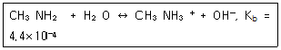
- CH3NH2 ↔ CH3NH3+ + H+
- CH3NH3+ ↔ CH3NH2+ H+
- CH3NH3+ + OH- ↔ CH3NH2 + H2O
- CH3NH2 + OH- ↔ CH3N-H + H2O
(정답률: 63%)
3과목: 기기분석I
41. 자외선-가시광선(UV-Visible) 흡수 분광법에서 주로 관여하는 에너지 준위는?
- 전자 에너지 준위(Electronic Energy Level)
- 병진 에너지 준위(Translation Energy Level)
- 회전 에너지 준위(Rotational Energy Level)
- 진동 에너지 준위(Vibgrational Energy Level)
(정답률: 63%)
42. 적외선 흡수스펙트럼을 나타낼 EO 가로축으로 주로 파수(cm-1)을 쓰고 있다. 파장(㎛)과의 관계는?
- 파수 = 10000/파장
- 파수 × 파장 = 1000
- 파수 × 파장 = 100
- 파수 = 1000000/파장
(정답률: 68%)
43. 다음 스펙트럼 영역 중 에너지가 가장 낮은 영역은?
- Visible spectrum
- Far IR spectrum
- IR spectrum
- Near IR spectrum
(정답률: 69%)
44. 불꽃 원자화(Flame Atomizer) 방법과 비교한 전열 원자화(Electrothermal Atomizer) 방법의 특징에 대한 설명으로 틀린 것은?
- 감도가 불꽃원자화에 비하여 뛰어나다.
- 적은 양의 액체시료로도 측정이 가능하다.
- 고체 시료의 직접 분석이 가능하다.
- 측정농도 범위가 106 정도로서 아주 넓고 정밀도가 우수하다.
(정답률: 50%)
45. 이상적인 변환기의 성질이 아닌 것은?
- 높은 감도
- 빠른 감응시간
- 높은 신호-대-잡음비
- 반드시 Nernst 식에 따라야 함
(정답률: 60%)
46. 적외선흡수분광법에 흡수봉우리의 파수(cm-1)가 가장 큰 작용기는?
- C=O
- C-O
- O-H
- C=C
(정답률: 61%)
47. 핵자기공명분광법에 대한 설명으로 틀린 것은?
- 시료를 센 자기장에 놓아야 한다.
- 화학종의 구조를 밝히는데 주로 사용된다.
- 흡수과정에서 원자의 핵이 관여하지 않는다.
- 4~900MHz 저옫의 라디오 주파수 영역의 전자기 복사선의 흡수를 측정한다.
(정답률: 74%)
48. 적외선분광법에서 물 분자의 이론적 진동방식 수는?
- 2개
- 3개
- 4개
- 5개
(정답률: 68%)
49. 분광 분석기의 구성 중 검출기로 이용되는 것은?
- Cuvette(큐벳)
- Grating(회절발)
- Chopper(토막기)
- Photomultiplier tuve(광전증배관)
(정답률: 60%)
50. 500nm 파장의 빛은 어느 영역에 해당하는가?
- 적외선
- 자외선
- 가시광선
- 방사선
(정답률: 70%)
51. 원자분광법에서의 고체 시료의 도입에 대한 설명으로 틀린 것은?
- 미세 분말 시료를 슬러리로 만들어 분무하기도 한다.
- 원자화장치 속으로 시료를 직접 수동으로 도입할 수 있다.
- 시료 분해 및 용해 과정이 없어서 용액시료 도입보다 정확도가 높다.
- 보통 연속신호 대신 불연속신호가 얻어진다.
(정답률: 60%)
52. 불꽃에서 분석원소가 이온화되는 것을 방지하기 위한 이온화억제제로 가장 적당한 것은?
- Al
- K
- La
- Sr
(정답률: 59%)
53. 1.0cm 두께의 셀(Cell)에 몰흡광계수가 5.0×103L/molㆍcm인 표준시료 2.0×10-4M 용액을 넣고 측정하였다. 이 때 투과도는 얼마인가?
- 0.1
- 0.4
- 0.6
- 1.0
(정답률: 61%)
54. 분자의 쌍극자 모멘트의 알짜 변화를 주로 이용하는 분석은?
- 적외선 흡수
- X선 흡수
- 자외선 흡수
- 가시광선 흡수
(정답률: 63%)
55. 적외선분광법에서 사용되는 광원 중 광검출과 라이더(Lidar)와 같은 원격제어 감응을 하는 용도로 널리 사용되는 광원은?
- Globar광원
- 수은 아크 광원
- 텅스텐 필라멘트 등
- 이산화탄소 레이저 광원
(정답률: 43%)
56. 원자흡수분광법에서는 매트릭스에 의한 방해가 있을 수 있다. 매트릭스 방해를 보정하는 방법으로 가장 거리가 먼 것은?
- 복사선 완충제를 사용하는 방법
- 보조광원(중수소 등이나 자외선 등)을 사용하여 보정하는 방법
- 서로 이웃에 있는 두 가지 스펙트럼의 세기를 측정하여 보정하는 2선 보정법
- Zeeman 효과와 Smith Hieftje 바탕 보정법
(정답률: 58%)
57. 매트릭스 효과가 있을 가능성이 있는 복잡한 시료를 분석하는데 특히 유용한 분석법은?
- 내부표준법
- 외부표준법
- 표준물첨가법
- 표준 검정곡선 분석법
(정답률: 65%)
58. 염소(Cl)를 포함한 수용성유기화합물 중의 카드뮴(Cd)을 유도결합플라스마방출분광법(ICP-AES)으로 정량할 때 가장 올바른 조작은?
- 물에 용해하므로 일정량을 용해 후 직접 정량한다.
- 유기물을 700℃에서 연소시킨 후 질산처리하여 Cd를 정량한다.
- 질산과 황산으로 유기물을 분해시키고 황산을 제거한 후 Cd를 정량한다.
- 물에 용해시킨 후 질산을 100mL 당 2mL의 비율로 가하여 산농도를 조절하고 Cd를 정량한다.
(정답률: 70%)
59. X선 분광법에서 복사선 에너지를 전기신호로 변화시키는 검출기가 아닌 것은?
- 기체-충전변환기
- 섬광계수기
- 광전증배관
- 반도체변환기
(정답률: 59%)
60. 원자흡수분광법(Atomic Absorption)에서 사용하는 광원으로 가장 적당한 것은?
- 수은등(Mercury Lamp)
- 전극등(Electron Lamp)
- 방전등(Discharge Lamp)
- 속빈 음극등(Hollow Cathode lamp)
(정답률: 81%)
4과목: 기기분석II
61. 분자질량법에 사용되는 이온원의 종류와 이온화 도구가 잘못 짝지어진 것은?(오류 신고가 접수된 문제입니다. 반드시 정답과 해설을 확인하시기 바랍니다.)
- 전화 충격 - 빠른 전자
- 장 이온화 - 높은 전위 전극
- 전자 분무 이온화 - 높은 자기장
- 빠른 원자 충격법 - 빠른 이온살
(정답률: 48%)
62. 일반적으로 열분석법은 온도 프로그램으로 가열하면서 물질 또는 그 반응 생성물의 물리적 성질을 온도 함수로 측정하는 분석법이다. 고분자 중하베를 시차열법분석(DTA)을 통해 분석할 때 흡열반응 피크(Peak)로 측정할 수 있는 것은?
- 유리 전이 과정
- 녹는 과정
- 분해 과정
- 결정화 과정
(정답률: 56%)
63. 얇은 층 크로마토그래피(TLC)에 대한 설명으로 틀린 것은?
- 얇은 층 크로마토그래피(TLC)의 응용법은 기체크로마토그래피와 유사하다.
- 시료의 점적법은 정량 측정을 할 경우 중요한 요인이다.
- 최고의 분리 효율을 얻기 위해서는 점적의 지름이 작아야 한다.
- 묽은 시료인 경우는 건조시켜 가면서 3~4회 반복 점적한다.
(정답률: 49%)
64. 질량분석기로 C2H4+(MW = 28.0313)과 CO+(MW = 27.9949)의 봉우리를 분리하는데 필요한 분리능은 약 얼마인가?
- 770
- 1170
- 1570
- 1970
(정답률: 71%)
65. 질량분석계로 분석할 경우 상대세기(abundance)가 거의 비슷한 두 개의 동위원소를 갖는 할로겐 원소는?
- Cl(chlorine)
- Br(bromine)
- F(fluorine)
- I(Iodine)
(정답률: 72%)
66. 다음 특성을 가진 이온화 방법은?
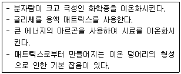
- 전자 충격 이온화
- 전기 분무 이온화
- 빠른 원자 충격 이온화
- 매트릭스지원 레이저 탈착/이온화
(정답률: 42%)
67. 길이 3.0m의 분리관을 사용하여 용질 A와 B를 분석하였다. 용질 A와 B의 머무름 시간은 각각 16.800분과 17.36.분이고 봉우리 나비(4τ)는 각각 1.12분과 1.24분이었으며 머물지 않는 화학종은 1.10분만에 통과하였다. 분해능을 1.50으로 하기 위해서는 관의 길이를 약 몇 m로 해야 하는가?
- 10m
- 20m
- 30m
- 40m
(정답률: 32%)
68. 이산화탄소의 질량스펙트럼에서 분자이온이 나타나는 질량 대 전하(m/z) 비는 얼마인가?
- 44
- 28
- 16
- 12
(정답률: 77%)
69. 백금 환원전극을 사용하여 용액 안에 있는 Sn4+ 이온을 Sn2+ 이온으로 5.00mmol/h의 일정한 속도로 환원시키려고 한다. 이 전극에 흘려야 하는 전류는 약 몇 mA인가? (단, 패러데이 상수 F = 96500C/mol 이고, Sn의 원자량은 118.7이며 다른 산화-환원과정은 일어나지 않는다.)
- 134
- 268
- 536
- 965
(정답률: 40%)
70. 고고학적인 유물의 시대를 결정하고 할 때 가장 유용하게 사용될 수 있는 분석법은?
- 질량분석법
- 원자흡수분광법
- 전기화학분석법
- 자외선-가시선 분자흡수 분광법
(정답률: 67%)
71. 폴라로그래피에서 시료의 정성분석에 사용되는 파라미터는?
- 확산전류
- 반파전위
- 잔류전류
- 한계전류
(정답률: 56%)
72. 머무름시간이 410초인 용질의 봉우리나비는 바탕선에서 측정해 보니 13초이다. 다음의 봉우리는 430초에 용리되었고, 나비는 16초이다. 두 성분의 분리도는?
- 1.18
- 1.28
- 1.38
- 1.48
(정답률: 55%)
73. 질량분석계의 질량분석관(analyzer)의 형태가 아닌 것은?
- 비행시간(TOF)형
- 사중극자(quadrupole)형
- 매트릭스지원탈착(MALDI)형
- 이중 초정(Double focusing)형
(정답률: 60%)
74. 전압전류법(Voltammetry)에 대한 설명 중 틀린 것은?
- 반파전위는 정성분석을 확산전류는 정량분석을 가능하게 한다.
- 폴라로그래피는 적하수은 전극을 이용하는 전압전류법이다.
- 벗김분석이 아주 민감한 전압전류법인 이유는 분석물질이 농축되기 때문이다.
- 측정하고자 하는 전류는 패러데이 전류이고, 충전 전류(charging current)는 패러데이 전류를 생성시키게 하므로 최대화해야 한다.
(정답률: 64%)
75. 전기량법 적정장치에서 반드시 필요로 하지 않는 것은?
- 적정전지
- 일정전류원
- 기체발생장치
- 정밀한 전자시계
(정답률: 61%)
76. 기체크로마토그래피(GC)에 대한 설명으로 옳은 것은?
- 이동상은 항상 기체이다.
- 이동상은 액체일 수 있다.
- 고정상은 항상 액체이다.
- 고정상은 항상 고체이다.
(정답률: 73%)
77. 고성능 액체 크로마토그래피(HPLC)에서 사용되는 펌프시스템에서 요구되는 사항이 아닌 것은?
- 펄스충격이 없는출력을 내야 한다.
- 흐름 속도의 재현성이 0.5% 또는 더 좋아야 한다.
- 다양한 용매에 의한 부식을 방지할 수 있어야 한다.
- 사용하는 컬럼의 길이가 길지 않으므로 펌핑 압력은 그리 크지 않아도 된다.
(정답률: 72%)
78. 크로마토그래피에서 단높이(Plate Height)에 대한 설명으로 옳은 것은?
- 단높이는 띠의 변화량(σ2)과 띠가 이동한 거리사이의 비례상수이다.
- 동일 길이의 컬럼에서 단높이가 커질수록 분해능이 좋아진다.
- 동일 길이의 컬럼에서 단높이가 커질수록 피크의 폭(Peak Width)이 작아진다.
- 컬럼의 길이가 길어지면 단높이는 작아진다.
(정답률: 31%)
79. 얇은 층 크로마토그래피(TLC)에서 지연지수(retardation factor)에 대한 설명 중 틀린것은?
- 항상 1 이하의 값을 갖는다
- 1에 근접한 값을 가지면 이동상보다 정지상에 분배가 크다.
- 시료가 이동한 거리를 이동상이 이동한 거리로 나눈 값이다.
- 정지상의 두께가 지연지수 값에 영향을 준다.
(정답률: 48%)
80. 다음 질량분석계 중 자기장을 주로 이용하는 것은?
- 이온포집 질량분석계
- 비행시간 질량분석계
- 사중극자 질량분석계
- Fourier 변환 질량분석계
(정답률: 58%)